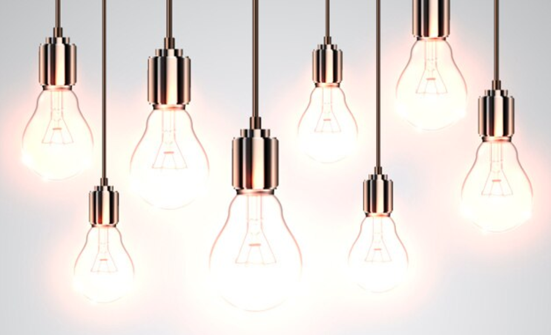
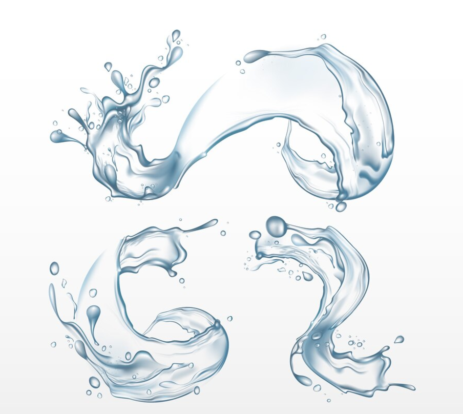
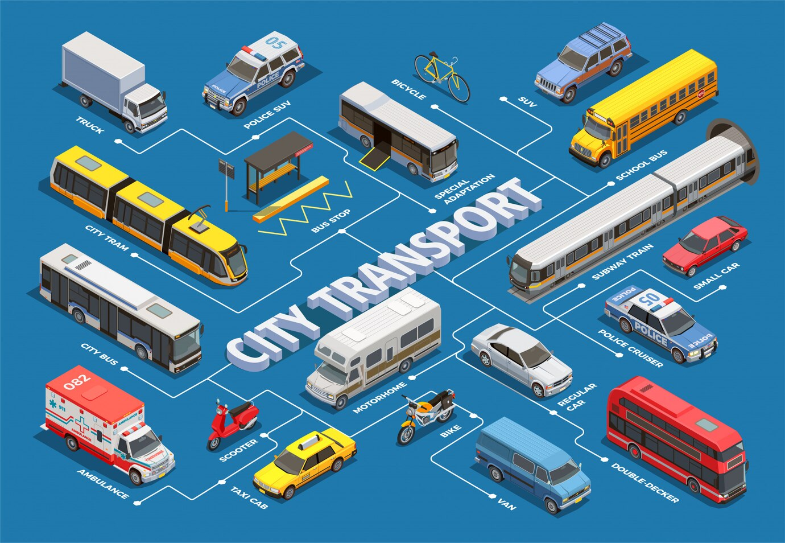

Reducir el consumo de energía
⦿ Usa electrodomésticos eficientes en energía y luces LED.
⦿ Apaga los aparatos electrónicos cuando no se usen.
⦿ Considera fuentes de energía renovable como los paneles solares.
Conservación del agua
⦿ Arregla las fugas e instala accesorios de bajo flujo.
⦿ Reutiliza aguas grises para jardinería.
⦿ Adopta hábitos que ahorren agua, como cerrar el grifo mientras te cepillas los dientes.
Elegir transporte sostenible
⦿ Sustituye artículos desechables por alternativas reutilizables, como botellas de agua, popotes y bolsas de compras.
⦿ Compra productos con empaques mínimos o ecológicos.
Reducir plásticos de un solo uso

⦿ Compra productos de origen sostenible y local.
⦿ Apoya a las empresas con políticas éticas y ecológicas.
⦿ Aboga por prácticas sostenibles en tu lugar de trabajo o comunidad.
Apoyar prácticas y empresas ecológicas

⦿ Compra productos de origen sostenible y local.
⦿ Apoya a las empresas con políticas éticas y ecológicas.
⦿ Aboga por prácticas sostenibles en tu lugar de trabajo o comunidad.
Plantar árboles y apoyar espacios verdes

⦿ Participa en eventos locales de plantación de árboles.
⦿ Inicia un jardín en casa o convierte tu balcón en un espacio verde.
⦿ Protege los hábitats naturales colaborando en proyectos de conservación.